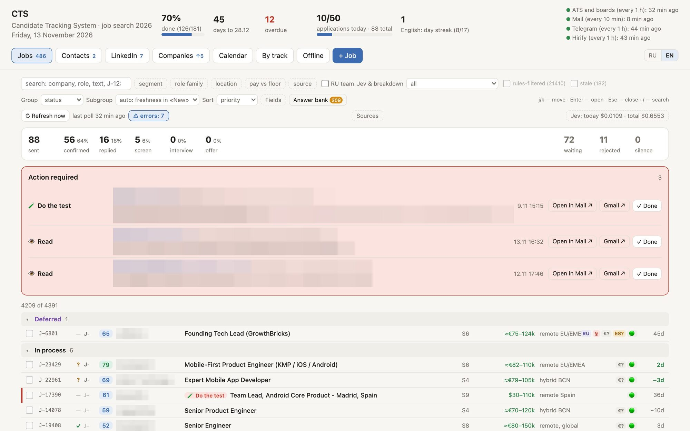
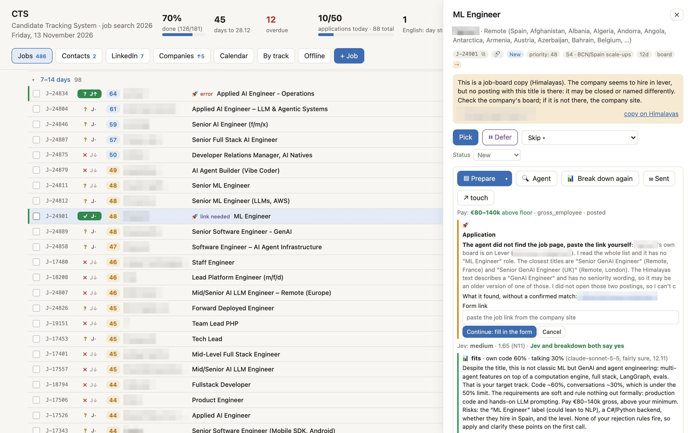

CTS: the system behind my job search
I built this for myself when I started looking for my next role in October 2026. It is one place for the whole search: which openings exist, which are worth my time, who I know there, what I have to do today, and what happened next.

This page describes what CTS is. How the search and the system got here, by milestones: the journal.
The problem
A job search is several jobs at once. Openings are spread across hundreds of career pages, job boards, messengers and specialised channels, and most of them do not fit. Contacts, follow-ups, events and deadlines live somewhere else. I wanted a single system, with the reasoning behind every suggestion visible.
Human in the loop
CTS does the reading, sorting and paperwork. Every decision that leaves my computer is mine. I pick the openings. Every CV is assembled from blocks I have proofread, by rules agreed in advance, so the result is deterministic: no text in it that I have not seen. I review every filled form, and nothing is sent without my explicit go-ahead for that application. More in Principles.
In practice it looks like this: on the go, from my phone, I pick openings and start the applications. Agents prepare the CVs and fill in the forms while I am out. At home I review them all in one sitting, say what to change in the wording, and give the go-ahead; the agents make the changes and send. As little manual work as possible, and never without a person checking.
What it does
Market monitoring
- Polls company career pages through 18 connectors (Greenhouse, Ashby, Lever, Workday and others), plus job boards, messenger channels and specialised feeds.
- Reads job alert emails through the Gmail API, with read-only access.
- Merges the same role from different sources into one card and traces a job board repost back to the employer's own posting when possible.
- Notices when a posting disappears from the employer's site and closes the card.
Scoring and triage
- A rules engine tags each opening by role, location, pay, stack and company type, applies hard filters, and shows why it got its score.
- An LLM fills in only the fields that rules could not settle.
- A breakdown estimates from the posting how much of the role is hands-on code and how much is conversation, and with whom.
- Decisions take one click: pick, defer with a reminder, or skip with a reason. Skip reasons become new rules after I review them.

Applications
- A CV builder assembles each CV from a library of proofread blocks by fixed rules, checks it with a linter and renders a text-based PDF.
- An agent fills the application form in a browser tab and stops before sending. I review the forms in a batch, by voice or text, and the agent applies my changes and sends only after my explicit go-ahead.
- An answer bank keeps consistent replies to common application questions.
- A funnel from new opening to offer, with a timeline for each job, time in each stage and days to first reply.
Networking, companies and events
- People are a funnel of their own, from first contact to someone who would refer me. Every touch is logged and has a next step with a date.
- A registry of the companies I watch, each with its open roles, people and hiring activity over time.
- Meetups and conferences by week, from idea to registered to attended, with notes on who I met.
Tasks and calendar
- Numbered tasks, tracks, deadlines and checkpoints, a calendar, and daily habits with streaks.
- Follow-ups, next steps and interviews from the rest of the system land here on their own.
Technology
| Backend | Python 3 standard library only: ThreadingHTTPServer and a JSON API |
|---|---|
| Data | SQLite in WAL mode, with append-only logs and daily backups |
| Frontend | Plain JavaScript, HTML and CSS, with no framework or build step; English and Russian |
| Scheduling | macOS launchd: career pages and boards every hour, email every 10 minutes |
| AI | Claude through the Claude Code CLI, with strict JSON schemas and a budget cap on each call; cheaper models through OpenRouter for bulk checks |
| Integrations | Public ATS APIs, Gmail API, messenger channels |
| Headless Chrome | |
| Remote access | Tailscale, from my phone and iPad, with no public address |
| Quality | Over 600 automated tests with unittest, Git |
How I built it
It was running on day two and took shape within a week, built with AI coding agents, mainly Claude Code. My part was deciding what to build, setting the architecture, checking results against real data and changing the rules when they were wrong. Whenever a score looked off, I recorded the case, found the cause and fixed the rule behind it.
It runs only on my own computer. It has no other users and the code is private, because it holds my personal data.
Credits
Before writing my own, I studied career-ops by Santiago Fernández de Valderrama, an open-source job search system built on AI agents. It shaped several parts of CTS: how to read the public APIs of applicant tracking systems, the idea of an append-only status log, the rules against inventing facts in a CV, and how to treat LinkedIn. Then we went different ways. career-ops writes a long report on a few openings and talks you out of the rest. CTS scores thousands of openings cheaply, keeps my own constraints (money floor, work permit, location) as hard rules, and runs experiments on its own output.